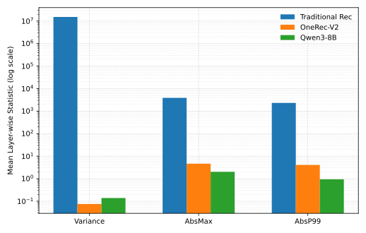
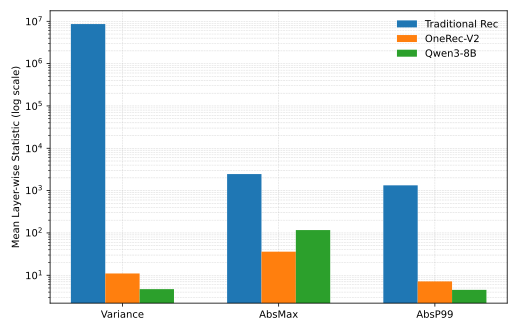
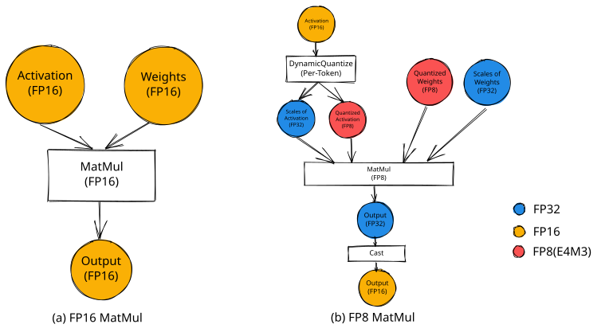
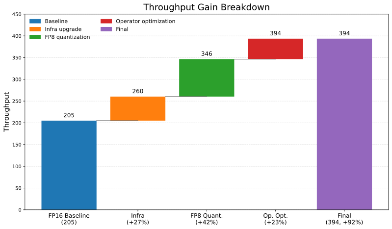

OneRec-V2 的量化推理
摘要
量化推理已在大语言模型中展现出显著的系统级收益，同时保持模型质量。相比之下，在工业环境中将低精度量化可靠地应用于推荐系统仍然具有挑战性。这一困难源于训练范式、架构模式和计算特性的差异，这些差异导致权重和激活表现出不同的数值行为。传统推荐模型往往表现出高幅度、高方差的权重和激活，使其对量化引起的扰动更加敏感。此外，推荐工作负载经常受限于有限的硬件利用率，从而限制了低精度计算的实际收益。 在本工作中，我们在生成式推荐的背景下重新审视低精度推理。通过经验分布分析，我们表明 OneRec-V2 的权重和激活统计量显著更受控，并且比传统推荐模型更接近大语言模型的统计量。此外，OneRec-V2 表现出更加计算密集的推理模式，并具有显著更高的硬件利用率，从而使低精度计算能够带来更多的端到端吞吐量收益。利用这一特性，我们开发了一个 FP8 后训练量化框架，并将其集成到优化的推理基础设施中。所提出的联合优化实现了端到端推理延迟降低 49%，吞吐量提升 92%。广泛的在线 A/B 测试进一步证实，FP8 推理不会导致核心指标下降。 这些结果表明，随着推荐系统向大语言模型的范式演进，LLM 领域中建立的算法级和系统级优化技术可以有效地适配到大规模推荐工作负载中。
1 引言
量化推理已成为提升大规模神经网络效率的一项关键技术。在大语言模型（LLM）中，低精度格式已展现出显著的系统级收益，同时保持模型质量 (Micikevicius et al., 2022; Xiao et al., 2023; Dettmers et al., 2022; Micikevicius et al., 2017)。这些成功与基于 Transformer 的架构所具有的密集、计算密集的执行模式以及相对良好受控的数值行为密切相关。
相比之下，在工业实践中，将低精度量化可靠地应用于推荐系统长期以来一直具有挑战性。传统推荐模型通常针对细粒度排序任务进行优化，并且在训练范式和架构结构上都与 LLM 存在显著差异 (Naumov et al., 2019; Lee and Lee, 2019; Batmaz et al., 2019)。从经验上看，它们的权重和激活往往表现出高幅度和大方差，这使得这些模型对量化引起的扰动更加敏感。从系统角度来看，经典推荐推理工作负载经常受限于内存或控制，并且表现出相对较低的硬件利用率 (Naumov et al., 2019; Ivchenko et al., 2022; Zhou et al., 2025b)。因此，即使硬件平台支持低精度计算，实际的端到端收益也可能有限。这些数值和系统因素在历史上阻碍了低精度推理在传统推荐流水线中的有效部署。
生成式推荐模型的最新进展已开始缩小这一差距。OneRec 引入了一个统一的生成式框架，将召回和排序集成在一起 (Zhou et al., 2025b)，而 OneRec-V2 等后续扩展通过架构扩展和训练改进进一步完善了这一范式 (Zhou et al., 2025c; Liu et al., 2025; Zhou et al., 2025a)。与经典推荐架构相比，这些模型更依赖密集且结构受限的计算路径，从而提高了计算强度并改善了推理期间的硬件利用率。同时，它们的训练范式对激活幅度和方差施加了更强的隐式正则化。
在本工作中，我们研究了 OneRec-V2 的量化推理。通过经验分布分析，我们表明 OneRec-V2 的权重和激活统计量显著更受控，并且比传统推荐模型更接近 LLM 的统计量。此外，其计算密集的推理模式使低精度计算能够更有效地转化为端到端系统改进。利用这些特性，我们开发了一个 FP8 后训练量化框架，并与优化的推理基础设施集成。 大量实验表明，所提出的系统实现了端到端推理延迟降低 49%，吞吐量提升 92%。在线 A/B 测试进一步证实，我们的量化推理不会导致核心指标下降。这些结果表明，随着推荐系统向大语言模型的范式演进，LLM 领域中建立的低精度技术可以安全且有效地适配到现代推荐工作负载中。
本文的主要贡献总结如下：
-
•
我们分析了历史上限制低精度推理在传统推荐系统中有效性的数值因素和系统因素。
-
•
我们通过经验证明，OneRec-V2 中架构和训练范式的转变带来了更受控的权重和激活统计量以及更高的硬件利用率，显著提高了量化推理的可行性。
-
•
我们开发了一个 FP8 后训练量化框架，并与优化的推理基础设施集成，在在线性能没有任何下降的情况下实现了显著的延迟降低和吞吐量提升。
2 相关工作
2.1 低精度量化
低精度量化旨在通过以更低的数值精度表示权重和激活来降低计算和内存成本，同时控制由此产生的近似误差。近年来，大量研究表明，低精度量化可以有效地应用于大语言模型，在质量下降极小的情况下实现显著的推理加速 (Dettmers et al., 2022; Xiao et al., 2023; Jacob et al., 2018; Wu et al., 2020; Zhang et al., 2023)。
这些进展凸显了将量化策略与模型架构和激活统计量对齐的重要性。当数值分布受到良好调控且计算是密集且计算受限时，低精度计算可以转化为显著的系统级收益 (Lin et al., 2024; Frantar et al., 2022; Micikevicius et al., 2022)。然而，大多数现有结果是在大语言模型的背景下建立的，其标准化架构和执行模式与推荐模型存在显著差异。
在推荐领域，先前的工作主要针对嵌入压缩或内存效率探索了低精度技术 (Zhang et al., 2018)。虽然这些研究证明了将低精度表示应用于特定组件的可行性，但它们通常没有研究低精度部署下的分布特性或端到端推理行为。因此，低精度量化在现代推荐模型中的系统级有效性仍未得到充分探索。
2.2 推荐模型与生成式推荐
推荐模型传统上是在监督学习范式下开发的，目标包括点击率或转化率。经典工业架构通常采用多阶段流水线，其中召回、过滤和排序被实现为独立的组件。这些系统通常依赖大型嵌入表来表示稀疏类别特征，随后使用多层感知机或特征交互模块进行预测 (Naumov et al., 2019; Lee and Lee, 2019; Batmaz et al., 2019; Ivchenko et al., 2022)。虽然这在实践中有效，但多阶段设计本质上受到上游阶段的容量和召回限制的制约，并且整体推理流水线往往表现出异构且松散耦合的计算模式。
最近，生成式推荐作为一种替代范式出现，它将推荐表述为条件序列生成 (Wang et al., 2023)。通过将召回和排序集成到统一的生成过程中，该方法消除了严格的阶段边界，并能够在单一建模框架内进行端到端优化。OneRec 代表了对该范式的系统性探索 (Zhou et al., 2025b)，而 OneRec-V2 等后续扩展通过训练和结构改进进一步扩展了架构 (Zhou et al., 2025c; Liu et al., 2025; Zhou et al., 2025a)。与传统多阶段流水线相比，生成式推荐模型更依赖密集计算路径和统一执行模式，这可以在训练和推理期间带来更高的硬件利用率。
3 预备知识
3.1 量化背景
量化是一种使用较低数值精度表示模型参数和中间激活的技术，目的是在推理期间降低计算成本、内存占用和数据移动。给定一个浮点张量 ，量化通常涉及将其值重新缩放以匹配目标格式的可表示范围，然后进行舍入。一个通用的量化表示 可以表示为
其中 表示一个缩放因子，它控制 的动态范围如何映射到目标精度。在计算过程中，量化值通常以更高精度累加，或与适当的缩放组合以控制数值误差。
低精度量化可以应用于模型权重和激活两者。关键的设计选择包括缩放的粒度（例如，逐张量、逐通道或分块）以及缩放因子是在静态确定还是在运行时动态确定。在 LLM 中，低精度格式通常与更高精度的累加结合用于矩阵乘法等密集线性操作，因为大部分计算成本集中于此。
量化的有效性关键取决于被量化张量的数值特性。特别是，权重和激活的幅度和方差决定了低精度表示是引入可容忍的扰动还是导致有害的数值失真。因此，理解模型的分布特性是评估低精度推理可行性的必要前提。
3.2 模型权重与激活的分布特性


为了理解低精度推理在不同模型家族中的可行性，我们分析了模型权重和激活的经验分布。我们比较了三个代表性模型：（1）一个用于细粒度排序的推荐模型（快照日期 2026-02-04），（2）OneRec-V2（快照日期 2026-02-27），以及（3）作为代表性 LLM 的 Qwen3-8B。对于每个模型，我们收集包括方差、绝对最大值（AbsMax）和 99 百分位绝对值（AbsP99）在内的统计量，并报告它们在所有张量上的均值。这些指标同时刻画了整体分布和极值行为，而这二者是量化的关键因素。 图 1 以对数刻度总结了这些统计量。
传统推荐模型。 传统推荐模型在权重和激活上都表现出极大的数值尺度。权重的平均方差处于 量级，平均 AbsMax 超过 。激活统计呈现类似的模式，平均方差同样处于 量级，且极值幅度很大。这些结果表明模型分布高度分散且动态范围很宽。
大语言模型。 相比之下，Qwen3-8B 表现出小得多的权重统计量。 权重的平均方差约为 ，极值约为 。 尽管激活的最大值和方差偶尔可能达到更高的值，但其整体尺度仍明显低于传统推荐模型中观察到的水平。
OneRec-V2。 从图中我们可以得出结论，OneRec-V2 的分布统计量与大语言模型的统计量更为接近，而与传统推荐模型的统计量差异更大。平均权重方差低于 。激活统计量也比经典推荐模型中观察到的要小几个数量级，动态范围和离散程度大幅降低。
这些经验观察表明，权重和激活的数值行为在不同模型家族之间存在根本性差异。具有极宽动态范围和高度分散分布的模型对粗粒度缩放提出更大挑战，而统计量更受控的模型本质上更兼容低精度表示。
4 方法
基于上一节给出的分布分析，我们为 OneRec-V2 设计了一种实用的低精度推理方案。我们的目标不仅是将低精度计算引入模型，还要确保这种数值变化在真实服务负载下能够转化为有意义的端到端系统改进。 为此，我们采用一种由两个互补组件构成的联合优化策略。首先，我们针对 OneRec-V2 的数值与计算特点，设计了一套后训练量化方案。其次，我们将量化模型集成到优化的推理基础设施中，以提高硬件利用率和执行效率。这两个组件的结合使低精度计算能够带来稳定且可度量的系统级收益。
4.1 量化策略

我们采用后训练量化（PTQ）方法，在不修改模型架构或训练过程的情况下，将低精度计算引入 OneRec-V2 的推理阶段。量化仅应用于计算最密集的算子，即 Linear 层（包括 Attention 中的 qkvo 投影层以及 Dense FFN 中的线性变换）和 Sparse MoE 中的分组 GEMM 运算。其他对数值敏感或计算占比不高的组件保持原始精度，以控制潜在的数值风险。
图 2 展示了 Linear 层的 FP16 矩阵乘法与 FP8 矩阵乘法的比较。在 Linear 层中，权重按通道量化，缩放因子由 FP16 参数离线计算；激活则按 token 使用运行时计算的缩放因子进行动态量化。 矩阵乘法使用 FP8 TensorCore 乘法并以 FP32 累加，结果在进入后续层之前被转换回 FP16。 对于 MoE 中的分组 GEMM，我们采用分块量化，对激活沿最后一维使用 粒度，对权重使用 粒度。 这种块对齐设计减少了单个缩放因子所覆盖的动态范围，同时保留了原始路由和并行执行结构，使低精度计算能够在无精度损失的情况下集成。 所有模型权重都经过预量化，并以（FP8 权重，FP32 缩放因子）对的形式存储在 GPU 内存中。
总体而言，该量化策略优先覆盖计算密集型算子，并通过结构对齐的缩放和更高精度累加来控制数值误差，为后续系统级推理优化提供了稳定的数值基础。
4.2 基础设施优化
除量化之外，我们还优化了推理基础设施（RecoGEM），以确保降低精度的计算能够转化为可度量的端到端性能收益。 我们不依赖多阶段转换流水线（例如 PyTorch ONNX TensorRT），而是使用统一的算子库直接构建 TensorRT 执行图，从而能够更紧密地控制算子核选择、算子融合和内存布局。
在此执行框架之上，我们实现了若干算子级优化：
-
•
量化算子。 我们为激活缩放实现了一个高效的逐行量化算子，以及一个融合了量化与 GEMM 执行的融合低精度矩阵乘法算子核，从而减少中间内存流量并提高计算效率。
-
•
TopK 优化。 我们用基于基数排序的算子核（RadixTopK）替换默认的 TopK 实现，并应用算子核融合与零拷贝技术，以减少内存移动并在大批量负载下提高吞吐量。
-
•
Attention 优化。 我们针对 OneRec-V2 典型的大批量、短上下文场景重新设计了 attention 算子核，引入批级并行和软件流水线，以提高调度效率和硬件利用率。
-
•
MoE 优化。 对于 Sparse MoE，我们使用支持 Hopper TMA 的算子核和算子融合来优化分组 GEMM 执行路径，提高 TensorCore 利用率并提升有效模型 FLOPs 利用率（MFU）。
这些基础设施级优化共同提高了推理过程中的算术强度和硬件利用率。 当与前面描述的量化策略结合时，优化后的推理栈在生产服务配置下能够显著降低延迟并提升吞吐量。
5 实验
在本节中，我们评估所提出的 OneRec-V2 低精度推理方法的有效性。 我们首先报告离线服务性能，包括端到端延迟和吞吐量，并分析基础设施升级、量化和算子级优化各自的贡献。 然后我们展示在线 A/B 测试结果，以验证所提出的部署在实现显著效率收益的同时不会降低推荐质量。
5.1 设置
模型。 我们评估了一个生产规模的 OneRec-V2 模型，采用 fat-MoE 架构，包含约 4B 骨干参数，其中每个 token 激活 0.5B 参数。该模型遵循生成式推荐范式，并部署在单列短视频推荐场景中。
配置。 所有实验均在线服务配置下以批大小 32 进行。基线系统以 FP16 执行推理。所提出的系统对 Attention、Dense FFN 和 MoE 专家模块中计算占主导的 Linear 层应用后训练量化，而其他组件保持 FP16。
5.2 系统性能评估
我们首先从端到端延迟和吞吐量方面评估所提出部署的系统级效率。
基线 FP16 系统的平均推理延迟为 139 ms，吞吐量为 205。 在迁移到优化后的推理基础设施并启用低精度计算后，延迟降至 70 ms，对应降低 49%。 吞吐量从 205 提升至 394，相比基线提升 92%。

为了理解这些收益的来源，我们进一步将吞吐量提升分解为三个部分，如图 3 所示。 基础设施升级相对基线贡献 27% 的提升，在 Linear 和 MoE 算子上启用低精度计算额外贡献 42%，算子级优化再贡献 23%。 这些累加改进共同构成了观察到的 92% 端到端吞吐量增益。
总体而言，结果表明基础设施升级、低精度量化和算子级优化各自都带来了可度量的性能收益。 虽然量化贡献了吞吐量提升的很大一部分，但完整的 92% 提升是通过它们组合且互补的效果实现的。
5.3 在线 A/B 评估
| Metric | Kuaishou | Kuaishou Lite |
|---|---|---|
| App Stay Time | +0.047% | -0.018% |
| Watch Time | +0.044% | -0.157% |
| Video View | +0.073% | -0.041% |
| Like | +0.085% | -0.102% |
| Follow | +0.020% | -0.450% |
| Comment | +0.805% | +0.261% |
| Collect | +0.430% | -0.353% |
| Forward | +0.313% | +1.047% |
为了评估低精度推理对推荐质量的影响，我们在生产环境中进行了一周的在线 A/B 测试。 表 1 显示，在快手和快手极速版中，核心指标在优化后的推理配置下保持稳定。 在关键指标上未观察到一致的性能下降。 总体而言，结果证实低精度推理可以在不损害真实场景推荐效果的情况下部署。
5.4 分析与讨论
实验结果支持两个主要观察。 第一，对于计算主要由稠密线性运算和 MoE 专家主导的生成式推荐模型，低精度推理可以带来显著的系统级加速。接近 2 的吞吐量提升证明了降低精度的计算在大规模推荐服务中的实用价值。 第二，尽管对关键计算路径应用了更低精度，在线指标仍保持稳定。结合预备部分中的分布分析，这表明 OneRec-V2 的权重和激活统计量足够受控，能够容忍量化噪声。
总体而言，结果表明在真实生产约束下，低精度推理对大规模生成式推荐模型既可行又有益。
6 结论
在本工作中，我们在生成式推荐的背景下研究低精度推理，并在生产规模的OneRec-V2模型上验证了其实际可行性。 我们表明，推荐模型中量化的可行性不仅取决于数值格式，还取决于模型架构、训练范式和推理执行特征。 与传统推荐模型相比，OneRec-V2展现出更可控的权重与激活统计特性以及更计算密集的执行模式，因而更适合低精度计算。
基于这些特性，我们将后训练量化与优化的推理基础设施及算子级改进相结合。 我们的实验表明，每个组件都对系统效率有正向贡献，而它们的组合带来了端到端延迟的大幅降低和吞吐量的提升，同时在实际应用中保持了在线推荐质量。
这些结果表明，随着推荐模型向稠密、生成式架构演进，低精度计算可以成为提升服务效率的一种实用且可扩展的工具。 更广泛地说，当架构层面和系统层面的考量被共同解决时，为大型语言模型开发的优化技术可以有效地适配到现代推荐模型中。
局限性
未探索更低精度。本工作聚焦于FP8推理，将其作为效率与部署稳定性之间的实用折中，而未研究更激进的低精度设置，如INT8、FP6、FP4或混合低比特方案。因此，当前研究并未揭示生成式推荐模型完整的精度-效率前沿，且尚不清楚能否在无明显质量下降的情况下实现进一步压缩。
基础设施要求高。所提出的解决方案依赖大量基础设施支持和系统级定制，包括硬件能力、基于TensorRT的部署、算子级适配，以及针对Linear和MoE等关键模块的定制优化。这些要求可能限制该方法的可复现性和可移植性，尤其是在缺乏先进推理栈或充足工程资源的生产环境中。
生成式推荐模型覆盖有限。我们的结论来自在OneRec-V2上的实验，并未研究更广泛的生成式推荐架构集合。因此，所观察到的量化特性和部署收益在多大程度上能泛化到不同的模型设计、训练范式和推荐场景，仍不清楚。未来工作需要在更多生成式推荐模型上进行更广泛的验证。
致谢
我们感谢Haiping Xu、Xu He、Chenhui Wang和Jin Ouyang在训练基础设施方面的贡献。
参考文献
- A review on deep learning for recommender systems: challenges and remedies. Artificial Intelligence Review 52 (1), pp. 1–37. Cited by: §1, §2.2.
- Gpt3. int8 (): 8-bit matrix multiplication for transformers at scale. Advances in neural information processing systems 35, pp. 30318–30332. Cited by: §1, §2.1.
- Gptq: accurate post-training quantization for generative pre-trained transformers. arXiv preprint arXiv:2210.17323. Cited by: §2.1.
- Torchrec: a pytorch domain library for recommendation systems. In Proceedings of the 16th ACM Conference on Recommender Systems, pp. 482–483. Cited by: §1, §2.2.
- Quantization and training of neural networks for efficient integer-arithmetic-only inference. In Proceedings of the IEEE conference on computer vision and pattern recognition, pp. 2704–2713. Cited by: §2.1.
- Scalable deep learning-based recommendation systems. ICT express 5 (2), pp. 84–88. Cited by: §1, §2.2.
- Awq: activation-aware weight quantization for on-device llm compression and acceleration. Proceedings of machine learning and systems 6, pp. 87–100. Cited by: §2.1.
- Is chatgpt a good recommender? a preliminary study. arXiv preprint arXiv:2304.10149. Cited by: §2.2.
- Onerec-think: in-text reasoning for generative recommendation. arXiv preprint arXiv:2510.11639. Cited by: §1, §2.2.
- Mixed precision training. arXiv preprint arXiv:1710.03740. Cited by: §1.
- Fp8 formats for deep learning. arXiv preprint arXiv:2209.05433. Cited by: §1, §2.1.
- Deep learning recommendation model for personalization and recommendation systems. arXiv preprint arXiv:1906.00091. Cited by: §1, §2.2.
- Generative recommendation: towards next-generation recommender paradigm. arXiv preprint arXiv:2304.03516. Cited by: §2.2.
- Integer quantization for deep learning inference: principles and empirical evaluation. arXiv preprint arXiv:2004.09602. Cited by: §2.1.
- A survey on large language models for recommendation. World Wide Web 27 (5), pp. 60. Cited by: §2.2.
- Smoothquant: accurate and efficient post-training quantization for large language models. In International conference on machine learning, pp. 38087–38099. Cited by: §1, §2.1.
- Training with low-precision embedding tables. In Systems for Machine Learning Workshop at NeurIPS, Vol. 2018. Cited by: §2.1.
- Post-training quantization for neural networks with provable guarantees. SIAM journal on mathematics of data science 5 (2), pp. 373–399. Cited by: §2.1.
- OpenOneRec technical report. arXiv preprint arXiv:2512.24762. Cited by: §1, §2.2.
- OneRec technical report. arXiv preprint arXiv:2506.13695. Cited by: §1, §1, §2.2.
- Onerec-v2 technical report. arXiv preprint arXiv:2508.20900. Cited by: §1, §2.2.
Appendix A 示例附录
这是一个附录。